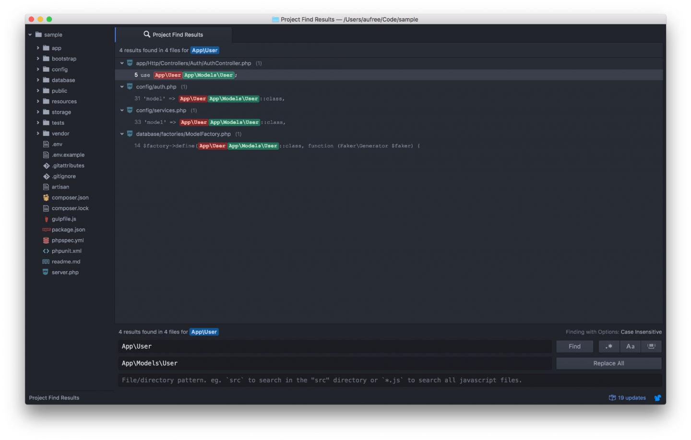

5.4. 模型文件
用户模型
Laravel 默认为我们生成了用户模型文件，代码如下所示：
app/User.php
<?php
namespace App;
use Illuminate\Notifications\Notifiable;
use Illuminate\Foundation\Auth\User as Authenticatable;
class User extends Authenticatable
{
use Notifiable;
/**
* The attributes that are mass assignable.
*
* @var array
*/
protected $fillable = [
'name', 'email', 'password',
];
/**
* The attributes that should be hidden for arrays.
*
* @var array
*/
protected $hidden = [
'password', 'remember_token',
];
}可以看到 Laravel 默认为我们生成的用户模型中包含了不少代码，其中 Notifiable 是消息通知相关功能引用，Authenticatable 是授权相关功能的引用。接下来我们主要将精力放在用户模型中定义的三个属性 table, fillable, hidden 上。我们在前面提到过，Eloquent 模型可以让我们很方便的与数据库进行交互，因此我们需要在 Eloquent 模型中借助对 table 属性的定义，来指明要进行数据库交互的数据库表名称，在用户模型中，我们对应要交互的数据库表为 users，因此定义的代码如下：
protected $table = 'users';在使用 Laravel 进行项目开发时，我们需要考虑到，当一些不怀好意的用户将类似 is_admin 这样的字段也嵌入到表单中进行提交时，会有怎样的后果？其后果是用户能够将自己指定为管理员，并进行一些只有管理员才能执行的操作，如删除用户，删除帖子等，这即是我们常说的『批量赋值』的错误，后面我将在后面章节『进行微博模型构建』时，为你演示『批量赋值』的报错。为了提高应用的安全性，Laravel 在用户模型中默认为我们添加了 fillable 在过滤用户提交的字段，只有包含在该属性中的字段才能够被正常更新：
protected $fillable = ['name', 'email', 'password'];最后，当我们需要对用户密码或其它敏感信息在用户实例通过数组或 JSON 显示时进行隐藏，则可使用 hidden 属性：
protected $hidden = ['password', 'remember_token'];使用 App\Models 命名空间
Laravel 为我们默认创建的模型文件放置在 app 文件夹下，为了让新手能够更好理解 MVC 模式的开发流程，本教程中将统一使用 app/Models 文件夹来放置所有的模型文件。现在让我们先来创建一个 app/Models 文件夹，并将 User.php 文件放置到其中。
$ mkdir app/Models
$ mv app/User.php app/Models/User.php在执行完这一步的操作之后，我们还需要执行下面这两个操作：
1、修改 User.php 文件，更改 namespace 为我们新创建的文件夹路径：
app/Models/User.php
<?php
namespace App\Models;
.
.
.2、编辑器全局搜索 App\User 替换为 App\Models\User，在 Atom 中可使用快捷键 shift + cmd(ctrl) + f 来进行全局搜索替换的操作。
完成之后，点击右下角的 Replace All 按钮。

因为上面的文件改动较大，因此我们需要进行一次 Git 提交，该改动的代码进行保存。
$ git add -A
$ git commit -m "Move user model to models folder"Article 模型的例子
模型文件可通过多种方式进行创建，下面让我们以文章模型（Article）为例，为你讲解模型文件的创建。
一般情况下，如果我们要自己手动创建一个模型文件，最简单的方式是通过 make:model 来创建。需要注意的一点是，模型类名称使用 单数 形式来命名：
$ php artisan make:model Article指定命名空间
这种方式创建的模型默认是放置在 app 文件夹下，本教程我们因遵循 MVC 的最佳实践而需要把模型文件放置于 app/Models 目录下。首先我们移除刚刚错误创建的文件，然后再为创建模型命令指定命名空间：
$ rm app/Article.php
$ php artisan make:model Models/Article同时创建迁移文件
如果需要在创建模型的同时顺便创建数据库迁移，则可以使用 --migration 或 -m 选项，让我们将刚刚生成的模型进行删除，尝试生成迁移文件：
$ rm app/Models/Article.php
$ php artisan make:model Models/Article -m
Model created successfully.
Created Migration: 2016_09_10_023235_create_articles_table可看到模型文件和迁移文件都一并生成了。
Eloquent 数据模型
正常情况下，一个最小代码的 Eloquent 模型如下所示：
<?php
namespace App\Models;
use Illuminate\Database\Eloquent\Model;
class Article extends Model
{
//
}Eloquent 表命名约定
在该文件中，Eloquent Article 模型默认情况下会使用类的「下划线命名法」与「复数形式名称」来作为数据表的名称生成规则。如：
- Article 数据模型类对应
articles表； - User 数据模型类对应
users表； - BlogPost 数据模型类对应
blog_posts表；
因此 Eloquent 将会假设 Article 模型被存储记录在 articles 数据表中。如果你需要指定自己的数据表，则可以通过 table 属性来定义，如：
<?php
namespace App\Models;
use Illuminate\Database\Eloquent\Model;
class Article extends Model
{
protected $table = 'my_articles';
}『约定优于配置』解释
『约定优于配置』（convention over configuration），也称作按约定编程，这是一种软件设计范式，旨在减少软件开发人员需做决定的数量，获得简单的好处，而又不失灵活性。如果所用工具的约定与你的期待相符，便可省去配置；反之，你可以配置来达到你所期待的方式。
Eloquent 数据表命名约定机制即属于『约定优于配置』，数据模型类 Article 按照系统约定对应于 articles 数据表，如果我们因为特殊原因需要使用其他表名称，只需要通过配置 $table 即可达到预期。
『约定优于配置』能极大提高开发效率，并且也更有利于团队协作。Laravel 项目中大量的使用了『约定优于配置』这种设计范式，这也是 Laravel 的另一个可爱之处。
收拾舞台
由于我们刚刚创建的文章模型仅作演示用，因此我们无需对这几个文件的更改进行保存，可通过下面命令进行移除：
$ git add -A
$ git checkout -f